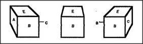
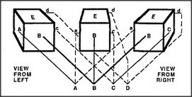

When we first discussed how Builder works, we assumed that it employed a vision-agent, See, to locate the various blocks it needs. However, we never discussed how See itself might work. A person simply looks and sees — but that's more complicated than it seems. For instance, even a simple cube looks different from each point of view, since as you move, the images it makes inside your eye keep changing in both shape and size.
How strange and dangerous moving would be if every step made everything seem wholly new! But that's not how it seems to us. When we move to the right, so that A becomes invisible, we remember what we learned when we saw it, and it still seems part of what we're seeing now. How can this be? Here is a theory of why things seem to stay the same, even when what we see of them keeps changing as we move around.
Frame-Arrays. When we move, our vision-systems switch among a family of different frames that all use the same terminals.
I'll use the term frame-arrays for these groups of frames that share the same terminals. When you represent a thing's details with a frame-array, you can continue to move around yet keep in mind all that you've observed from those different viewpoints, even though you've never seen them all at once. This gives us the wonderful ability to conceive of all of an object's different views as aspects of a single thing.
I do not mean to suggest that every time you see a new object you build a brand-new frame-array for it. First, you try to match what you see to the frame-arrays in the memories you have accumulated and refined over periods of many years. How do frame-arrays originate? I would assume that this underlying pattern — of families of frames that all share common terminals — is built into the architectures of major sections of the brain. But although that pattern is built in, developing the skills for using it involves each child in more than a decade of predestined learning.